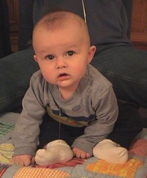

October 01, 2003
Isaac & Alex
Our good friends Karin & Jim Foss just had their second son, Alexander, on September 30th. Here he's not even 24 hours old (but he's very, very cute).
It's amazing how much babies grow in four months. I can't remember when Ike was that small (and quiet)!

Posted by Sara
October 02, 2003
Ready for Winter
This is one of the last times we were able to use this car seat because Ike is SO DARN HUGE. We had to upgrade to a bigger one about four months earlier than we thought we'd have to.

Posted by Sara
October 04, 2003
4 Months Old -- And Lookin' Cool

Posted by Sara
Ike & Graham
These two gorgeous little boys are friends from church (First Universalist). They had great fun playing together until Isaac tried to eat Graham.
Posted by Sara
Quality Time with Nana (2 pictures)
Isaac looooves this shirt of Nana's.

He loves Nana too.

Posted by Sara
October 12, 2003
Fun ... for a while. (2 pictures)
Ike's favorite new toy ...
... until he hurt himself while trying to shove that stupid jester's hat into his mouth.
Posted by Sara
October 13, 2003
Yum ... (3 pictures)
We started feeding him rice cereal for the first time on Saturday. You can tell he's still a bit unsure about this whole solid food thing.
But he can't get enough of his toes!
Posted by Doug
October 14, 2003
Heading to Dairy Queen
Love the Baby Bjorn carrier. Love the hat.

Posted by Sara
October 15, 2003
New Tricks (3 pictures)
He's figuring out how to hold the bottle himself -- he loves yanking it out of his mouth and shoving it back in. This is very impressive, but it gets ever-so-slightly annoying when he's done it 50 times in a row and one feeding takes half an hour.
Even his back is cute. He's getting pretty good at rolling from his back to his stomach, but once he's face down he has no idea what to do and freaks out a little bit. His new favorite sleeping position is on his right side--just like his mom.
This picture was taken when Isaac and Doug were playing before bedtime. The best part about it--besides Isaac's gorgeous face--is the noises Doug was making in order to entertain Ike.
Posted by Sara
October 16, 2003
Another New Trick
Ike sat by himself for a few seconds this afternoon--he figured out how to prop himself up with his hands. You might also notice he's drooling a bit these days.

Posted by Sara
October 20, 2003
So sorry...
I know, I know -- we've already broken our promise to update this site "every couple of days". But we were in Iowa for a UU conference, then Doug left for San Diego, and then my back went out. This is the most I've been out of bed in two days (and my back is screaming at me to return to a horizontal position). More pictures of Ike will be posted soon, I swear.
But for now, I just need to send a huge, huge, HUGE public thank you to my mom, who has been Isaac's primary care giver for the past 48 hours. Although it has been incredibly emotionally painful for me not to be able to hold him due to my #@%& back, it has been pretty darn fun to hear them playing together for hours on end. Thanks, Mom!
Posted by Sara
October 23, 2003
Greetings from IMax himself
Isaac wanted to make his own posting today. Here's what he "typed" while sitting on Doug's lap in front of the computer -- we're a little worried about the subliminal racist plug:
0. 9h8888888 mmmmhhncccc ddd d mi imj kmmmmmm/k .''''''''dfh j t t/ g g t t k gr tm , m m m 5krtk nb kkk. n kjjhkn
Posted by Doug
October 24, 2003
Pumpkin Carving (3 pictures)
Tonight we carved pumpkins in preparation for Halloween. Sara carved this one.
Yes, we think we're funny.
Doug decided to go with run-of-the-mill spooky ...
... and Isaac slumbered on.
Posted by Doug
October 26, 2003
October 27, 2003
Welcome to the World, Jack! (3 pictures)
Isaac has graciously agreed to take second stage today so his brand-new, 12-hour-old cousin can take the lime light. At 9:22 a.m. Atlanta time, Doug's sister, Sarah, gave birth to a healthy, happy, wonderfully perfect baby boy.
He weighed in at 9 lbs., 2 oz., same as Ike did at birth. His name is Kedrik (after his dad) Jackson (after Doug and Sarah's grandpa) Merwin. He'll be called Jack. The whole family, including big sisters Madeline and Chloe, are doing well.
In honor of Jack's birthday, we're throwing in an older family photo -- from July 4th weekend when Ike was just one month old (he's so tiny!). Jack's sisters are in the ever-so-cute flag swimsuits; Jack's mom is holding Chloe in the front row; Jack's dad is in the gray t-shirt.

WELCOME TO OUR FAMILY, JACK! WE CAN'T WAIT TO MEET YOU!
Posted by Sara
October 28, 2003
Cooling our heels before Shania (2 pictures)
Tonight Grandpa Clay took us and Doug's Aunt Linda (see picture below) to the Shania Twain concert in St. Paul. Isaac was disappointed he couldn't come along, but Grandma came over and he soon forgot all about us.
We also gave Grandpa and Aunt Linda a special sneak preview of Ike's Halloween costume -- ain't he precious???
Posted by Doug
October 31, 2003
Happy Halloween! (lots of CUTE pictures)


Posted by Sara